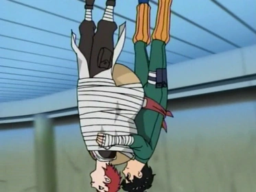
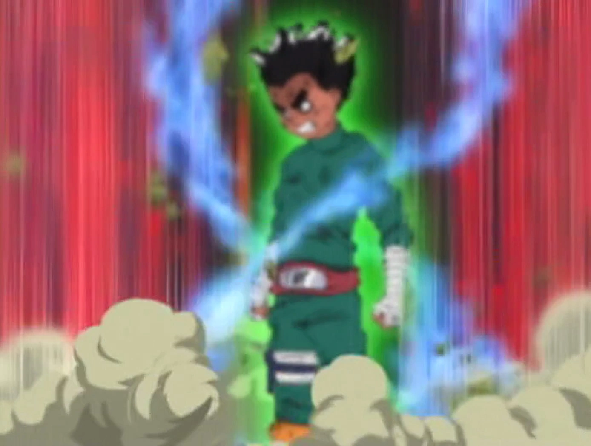

No universo de "Naruto", Taijutsu é uma forma de combate corpo a corpo que se baseia em habilidades físicas puras, como força, velocidade, reflexos e resistência, sem a necessidade de utilizar chakra para realizar técnicas especiais. Ao contrário do Ninjutsu e do Genjutsu, que dependem da manipulação de chakra para criar efeitos variados, o Taijutsu foca em movimentos marciais diretos, como socos, chutes, bloqueios e esquivas.
Os praticantes de Taijutsu treinam exaustivamente para aprimorar suas capacidades físicas, e muitas vezes utilizam técnicas especiais que maximizam o impacto e a eficiência de seus ataques. Um exemplo notável é o "Estilo Forte" de Rock Lee e seu mestre, Might Guy, que utilizam movimentos extremamente rápidos e poderosos para derrotar seus adversários.
Uma das técnicas mais conhecidas de Taijutsu é a "Lótus Frontal", que envolve uma combinação de movimentos rápidos e precisos para lançar o oponente no ar e, em seguida, atacar com força devastadora.
Outro exemplo é o uso dos "Portões de Chakra", que são pontos de limite dentro do corpo que, quando abertos, liberam grandes quantidades de energia, aumentando drasticamente a força e a velocidade do usuário, mas também causando grande desgaste físico.
O Taijutsu é fundamental para ninjas que se especializam em combates próximos e que possuem grande resistência e habilidades físicas, permitindo-lhes lutar de forma eficiente mesmo quando não podem usar técnicas baseadas em chakra.